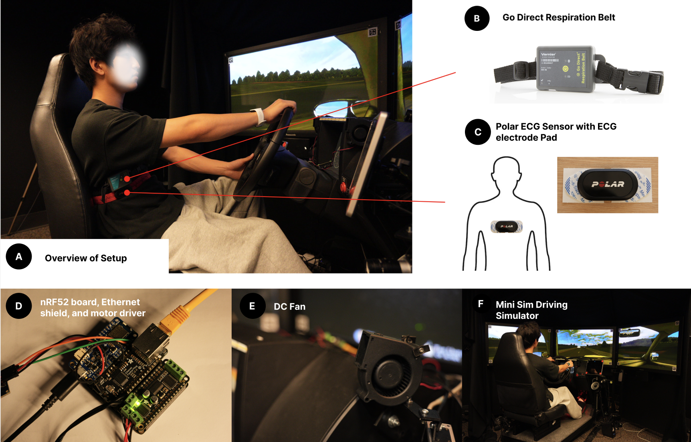
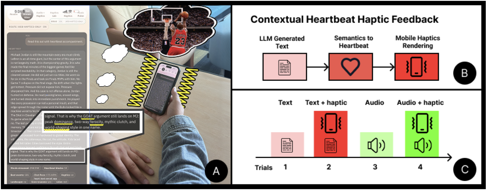
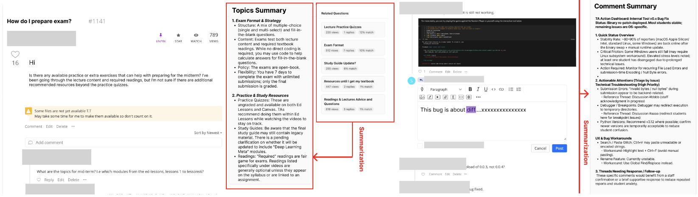
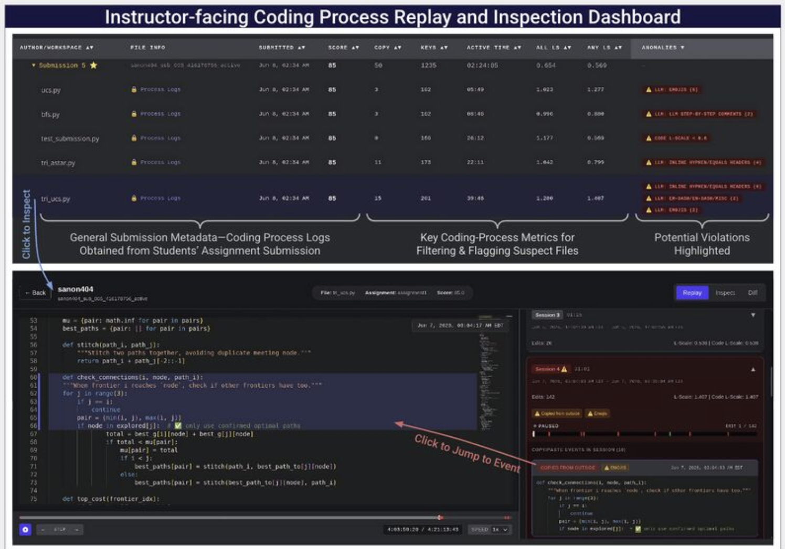
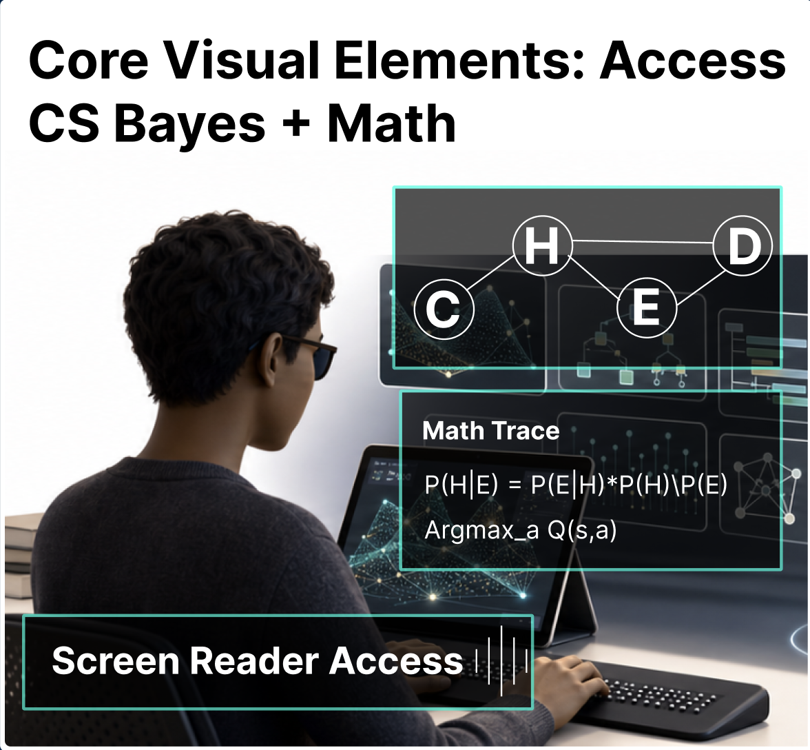
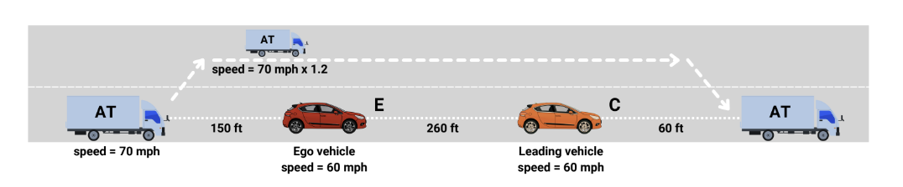

Affective driving & physiologyDriving interaction · manuscript
Before Demand Peaks
Preemptive airflow guidance timed around predictable stressors in simulated driving.
Read paper PDFI develop unobtrusive sensing and adaptive intervention technologies to support affect regulation, human performance, and accessible learning.
Research archive
Exploring how intelligent systems can sense, adapt to, and support human needs.

Affective driving & physiologyDriving interaction · manuscript
Preemptive airflow guidance timed around predictable stressors in simulated driving.
Read paper PDF
Affective AI & hapticsACM ICMI Companion · 2026
Contextual heartbeat haptics for affective text and audio LLM interactions.
View ACM abstract
Learning support & forumsLearning @ Scale · 2026
Just-in-time assistance and retrospective review for teaching assistants in online forums.
View ACM abstract
AI-resilient assessmentLearning @ Scale · 2026
Process-driven analytics for more trustworthy coding assessment in the age of LLMs.
View ACM PDF
Accessible STEM learningACM ASSETS · 2026
BLV-informed guidelines and iterative prompting for more useful LLM-generated alt text.
View ACM paper
Autonomous vehicles & trustDriving simulation study
How information framing, trust, and affect shape road users’ acceptance.
View paper PDFUX work
Translating user insights into thoughtful, usable, and accessible experiences.
 Financial literacy
Financial literacy
University of Maryland · 2022
Qualitative research and product concepts for international students navigating financial life in the U.S.
Read case study Public-sector AI
Public-sector AI
UMD capstone · 2024
A guided service for helping county employees frame workplace problems that AI could meaningfully address.
Read case studyXavor · 2021
An industry UX project documented in the original portfolio, presented here as a standalone case-study entry.
Read case studyTimeline
Education, research milestones, and professional experiences that shaped the work.
May 1, 2026
November 6, 2025
Secured my new advisors, Alex Adams and Thad Starner, and transferred to the HCC Ph.D. track.
September 6, 2025
Submitted my first-author paper to CHI 2026.
August 22, 2024
Accepted the offer from the Hybrid Intelligence Lab at Georgia Tech and moved to Atlanta.
June 2024
Received a Ph.D. offer from the Hybrid Intelligence Lab led by Mengyao Li at Georgia Tech.
May 29, 2024
Graduated from the University of Maryland, College Park, with a clearer research direction shaped by my advisor Jun Nishida.
December 2023 - February 2024
Worked as a Product Developer and Designer intern at Gen G in Shanghai.
August 22, 2022
Started my master's at the University of Maryland, College Park, exploring how technology can help people deal with stress.